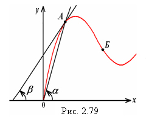

2.12.2.2. ѕараметры нелинейных элементов
ѕри описании характеристик ЌЁ используют статические и дифференциальные параметры. —татический параметр (Rст = u/i или Lст =Y/i, или Cст = q/u) определ€етс€ по статической характеристике у = f(х) элемента как отношение ординаты выбранной точки характеристики к еЄ абсциссе. —татический параметр пропорционален тангенсу угла a наклона пр€мой, проведенной через начало координат и рабочую точку ј (рис. 2.79). ƒифференциальный параметр (Rd = du/di, или Ld = dY/di, или Cd = dq/du) определ€етс€ по статической характеристике у = f(х) нелинейного элемента как отношение малых приращений dy/dx (см. рис. 2.79). ƒинамический параметр пропорционален тангенсу угла между касательной к характеристике у= f(х) в рабочей точке ј и осью абсцисс.ƒл€ пассивных элементов статические параметры всегда положительны, но дифференциальные Rd, Ld и Cd положительны только тогда, когда рабоча€ точка (например, точка ј, рис. 2.79) лежит на восход€щей части характеристики, и отрицательны, если рабоча€ точка (например, точка Ѕ) лежит на падающей части характеристики y(x). ѕри достаточно медленных изменени€х параметров у и x дифференциальные параметры совпадают со статическими. |